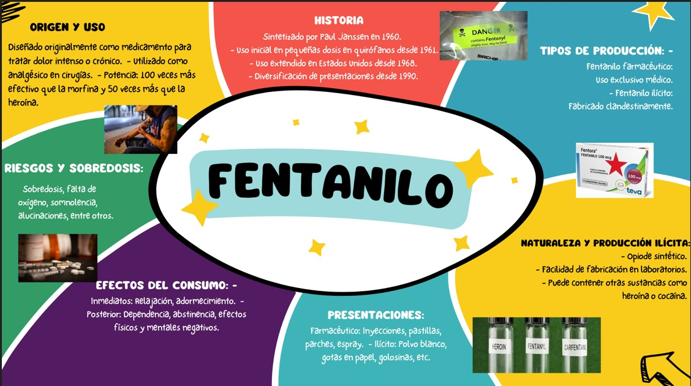

COLEGIO DE ESTUDIOS CIENTÍFICOS Y TECNOLÓGICOS DEL ESTADO DE MÉXICO. PLANTEL IXTLAHUACA
Elaborado por: Melissa Jaqueline Martínez Mireles.
Grupo: 404.Número de lista:18
Fecha de Elaboración:13 de abril de 2024. Hora: 3:12 p.m.


Elaborado por: Melissa Jaqueline Martínez Mireles. Para obtener ayuda, llama al 888-692-9355. Para ayuda y mayor información visita la página
Visita la pagina para mayor informacion